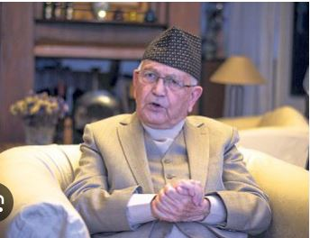

HISTORICAL
PEACEFUL E-Library for the
NEPAL Nepali Students
E-LIBRARY
HISTORICAL
PEACEFUL
E-Library for the
NEPAL Nepali Students
E-LIBRARY
⚲
Home
Historical Thinking
Browse History
About

Nepal is home to some of the remarkable UNESCO World Heritage Sites. Heritage sites in Nepal vary from natural wonders to magnificent cultural landmarks. While some are keepers of history's splendor, some are sheltered and lavish havens for thriving biodiversity. These landmarks are bold and beautiful and showcase Nepal's rich cultural and natural dimension that is truly awe-inspiring. The World Heritage Sites of Nepal have numerous structurally rich tourist spots that showcase the creative magnificence of Nepal and lavish national parks that allow biodiversity to prosper. UNESCO has identified ten historical sites of Nepal as World Heritage Sites. Among them, 8 are cultural heritage sites with centuries-long historical backgrounds, while 2 are natural heritage sites. Travelers are welcome to discover these brilliant landmarks and appreciate Nepal's grand and astonishing legacies. Whether you are a nature lover or a history and culture buff, the World Heritage Sites of Nepal have something to offer you.


Bhaktapur Durbar Square Boudhanath Stupa Sagarmatha National Park Chitwan National Park
At the beginning of king's reign the literacy rate of the country was estimated to be 5 percent and it reached 10 percent in 1960[213] while it reached 18 percent in 1971. After the 1960 coup, efforts were made to establish an education system. The All Round National Education Committee was established in 1961, and the National Education Advisory Board in 1968 in order to implement and refine the education system.[213] Nepal 's 1965's education plan and 1971's education plan hastened the educational development in the country. In the year 1971 (2028 BS), it was King Mahendra who formulated the education policy of the nation and implemented it by making the Education Act. In this year, Nepal's own education came into operation as an integral part of the Fourth Five-Year Plan (1970–75) designed to address individual as well as societal needs towards the goals of national development. This new education system boycotted foreign books and education system. Furthermore, he wrote books named Mahendra Malla for schools to give priority to Nepal and Nepali language and boycotted Indian Books.[4] The introduction of the first University of the country, Tribhuvan University was the landmark contributions made by King Mahendra in reforming education sector. At that time King Mahendra's family raised 16 lakh rupees by selling gold jewelries in order to fund the project.[66] He later modernized Tribhuvan University, creating conditions for higher education in Nepal, and displaced Indian books from the curriculum. He also started production of books in Nepal with the introduction of Jana Shiksha Samagri Kendra Limited. King Mahendra's diplomacy also made arrangements to send Nepali students to study in Russia on scholarships
 Sunil Bahadur Thapa made significant contributions to Nepal's education system, particularly in the areas of reform and modernization. He was a strong advocate for improving the quality of education and ensuring that it was accessible to all, regardless of background. Thapa worked on developing curricula that were relevant to Nepal’s socio-economic needs, helping to modernize the educational structure. He also promoted the integration of technical and vocational education, aiming to create a skilled workforce capable of contributing to the country's development. Thapa was committed to reducing educational disparities, particularly for marginalized and rural communities, striving to provide equal opportunities for all students. His leadership in education policy-making played a pivotal role in shaping the direction of Nepal's education system, leaving a lasting impact on the nation's educational landscape.